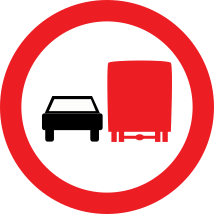

Loading...

No overtaking by goods vehicles
🚫 Regulatory Signs
📖 Description
This sign prohibits heavy goods vehicles from overtaking other motor vehicles. It is typically used on narrow, winding, or high‑traffic roads where truck overtaking would be dangerous or cause congestion.